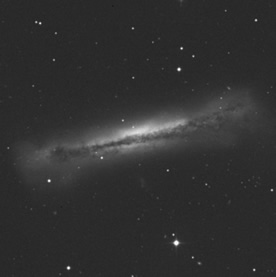

The term ‘disk galaxies’ includes all galaxy types that possess prominent disks. These include spiral galaxies (Hubble Types Sa-d and Sm) and S0 galaxies (otherwise known as lenticular galaxies).
The disks of spiral galaxies contain both gas and stars. The disks of S0 galaxies, on the other hand, are composed almost entirely of stars (i.e. there is no gas or dust in the disk). Disk galaxies vary in size from dwarf galaxies with masses of only a billion solar masses, to large spiral or S0 galaxies with masses of 1,000 billion solar masses. These galaxies often suffer from gravitational instabilities that cause the formation of bars and spiral arms – making them some of the most varied and interesting galaxies in the Universe.
Stars in the disks of galaxies generally all orbit in the same direction on nearly circular trajectories. Disks are therefore supported against their self-gravitation mostly by rotation. The Sun, itself a disk star, takes ~220 million years to complete one orbit about the Galactic centre. Measurement of the rotation curves of disk galaxies provide strong evidence for the existence of dark matter, as rotation speeds in the outer regions of the galaxies are so fast that, without an additional invisible component, the galaxies would fly apart.
|

The spiral (Sb) galaxy NGC 3628 possesses a disk that includes dust and gas as well as stars.
Credit: DSS |